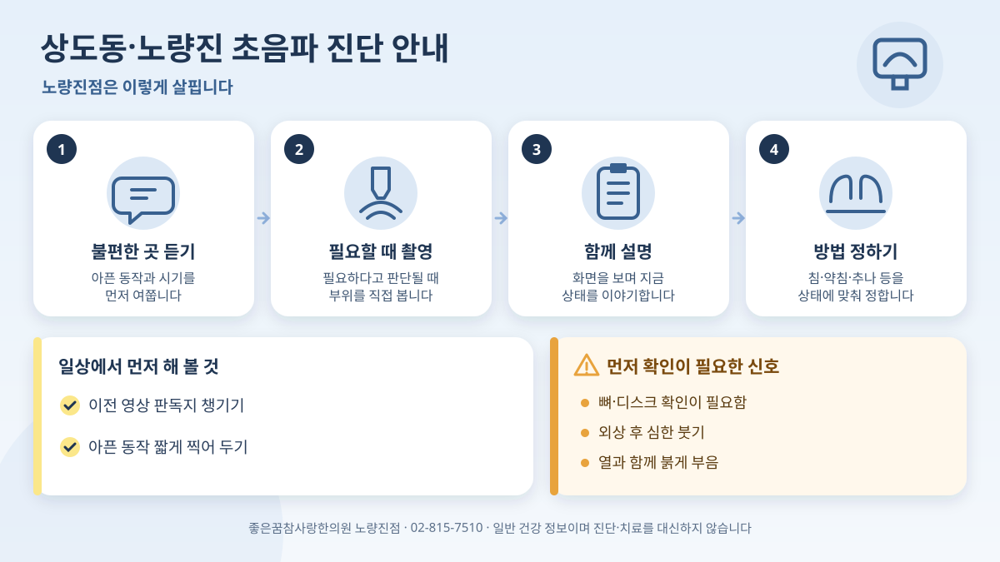
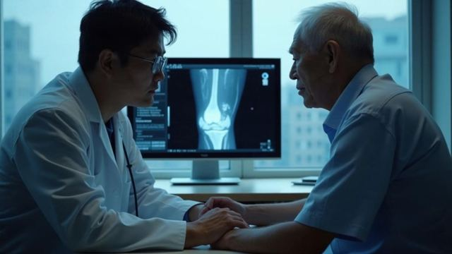
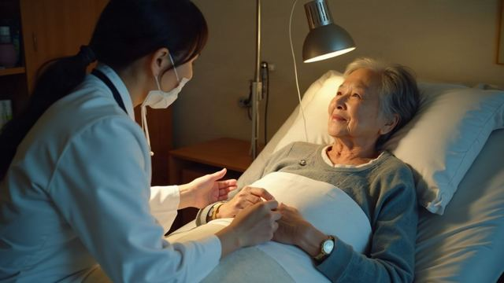
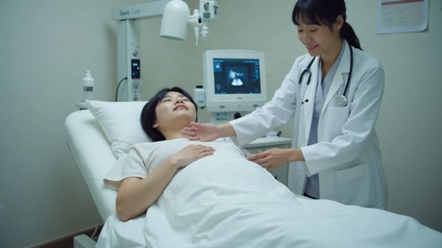
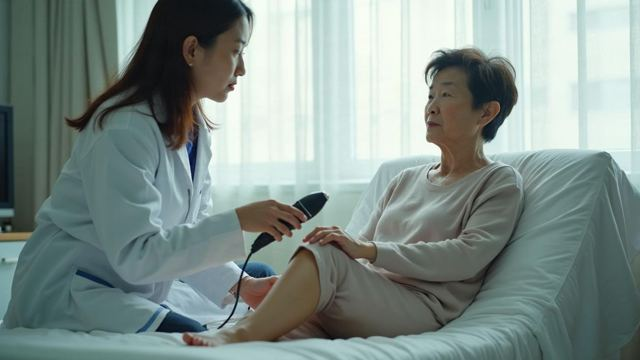
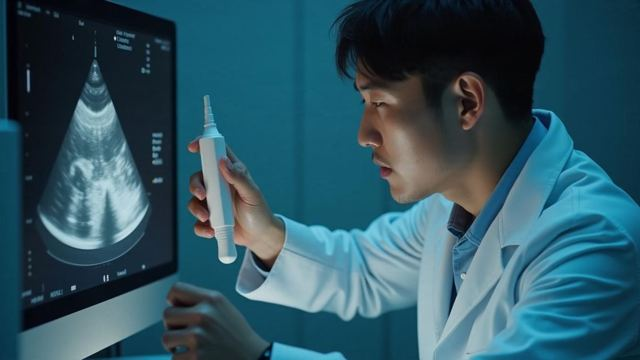
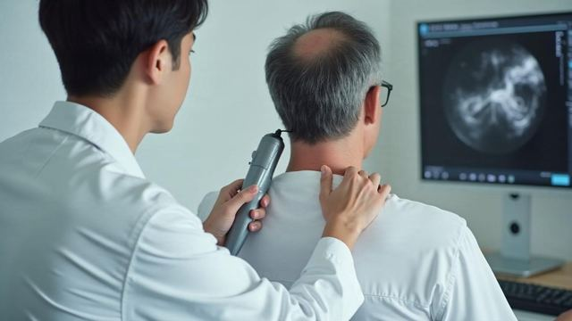
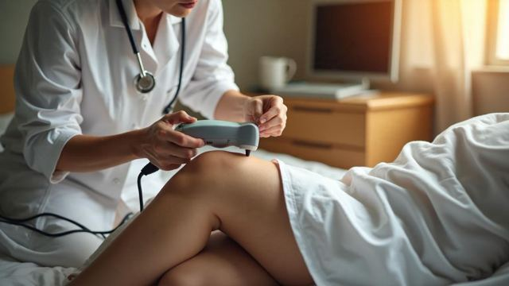

어깨·무릎·손목·발뒤꿈치처럼 아픈 부위의 상태를 눈으로 확인할 필요가 있을 때를 위한 안내입니다. 좋은꿈참사랑한의원은 모든 분께 같은 검사를 하지 않고, 상담과 진찰 후 필요하다고 판단될 때 초음파로 통증 부위의 조직 상태를 살핍니다.

초음파 진단은 무엇을 보나요?
초음파는 소리의 반사를 이용해 피부 아래 힘줄, 근육, 인대, 관절 주변의 모습을 화면으로 보는 검사입니다. 방사선을 쓰지 않고 움직이면서 볼 수 있어, 어떤 동작에서 아픈지와 함께 확인할 수 있습니다.
엑스레이가 뼈를 보는 데 주로 쓰인다면, 초음파는 힘줄이나 근육처럼 부드러운 조직을 보는 데 쓰입니다. 같은 부위를 양쪽으로 비교하거나 다음 진료에서 다시 볼 수 있다는 점도 특징입니다.
초음파로 함께 보는 경우
모든 통증에 초음파가 필요한 것은 아닙니다. 상담과 진찰만으로 충분한 경우가 많고, 화면으로 확인하는 것이 진료 방향을 정하는 데 도움이 될 때 사용합니다.
- 팔을 들 때 어깨가 걸리고 아픈 경우
- 손가락이 걸리거나 손목이 저린 경우
- 무릎 뒤가 붓고 당기는 경우
- 아침 첫발에 발뒤꿈치가 아픈 경우
먼저 이렇게 여쭙니다
통증 부위를 손가락 하나로 가리킬 수 있는지, 넓게 퍼져 있는지도 여쭙습니다. 부위가 좁고 분명할수록 초음파로 확인할 지점을 정하기 쉽습니다.
- 언제부터, 어떤 동작에서 아픈가요?
- 다른 병원에서 받은 영상검사 결과가 있나요?
- 붓기, 열감, 멍이 있나요?
- 통증 때문에 못 하게 된 일이 있나요?
검사 전에 알아 두면 좋은 것
검사 시간은 부위에 따라 다릅니다. 반지나 시계처럼 검사 부위에 걸리는 물건은 미리 빼 두면 편합니다.
- 검사 부위를 드러내기 쉬운 옷 입기
- 이전 검사 판독지가 있으면 가져오기
- 젤을 바르고 장비를 피부에 대는 방식이라는 점
- 누르는 부위가 아프면 바로 말씀하기
한의원에서 함께 살피는 것
초음파 화면은 상담 내용과 함께 봅니다. 확인한 상태에 따라 침, 약침, 추나, 체외충격파, 온열 장비 등 필요한 방법을 연결하고, 다음 진료에서 같은 부위를 다시 비교할 수 있습니다. 더 정밀한 검사나 다른 진료가 필요하다고 판단되면 다른 의료기관을 안내합니다.
초음파로 확인하기 어려운 것도 있습니다
초음파는 뼈 안쪽이나 척추 깊은 곳, 뇌처럼 소리가 통과하기 어려운 부위를 보기 어렵습니다. 이런 부위의 확인이 필요하거나 더 정밀한 검사가 필요해 보이면 영상의학과 등 다른 의료기관을 안내합니다. 초음파 소견은 상담과 진찰을 돕는 참고 자료로 씁니다.
이럴 때는 다른 진료를 먼저 받으세요
아래와 같은 경우에는 초음파보다 엑스레이, CT, MRI 같은 영상의학 검사가 먼저 필요할 수 있습니다.
- 넘어진 뒤 뼈가 어긋난 것 같거나 체중을 실을 수 없을 때: 영상의학 검사 먼저
- 부위가 빨갛고 뜨겁고 열이 날 때
- 갑자기 힘이 빠지거나 감각이 둔해질 때
- 만져지는 덩어리가 빠르게 커질 때
좋은꿈참사랑한의원 진료는 이렇게 진행됩니다
접수 후 상담에서 불편한 동작을 듣고, 진찰 중 필요하다고 판단되면 초음파를 봅니다. 필요하면 화면을 함께 보며 설명드리고 궁금한 점을 바로 여쭤보실 수 있습니다. 진료시간은 평일 09:30~20:00(점심 13:00~14:00), 토·일·공휴일 09:30~15:00입니다.
다음 진료에서 같은 부위를 다시 보며 변화를 비교할 수 있어, 처음 검사한 날짜와 불편했던 동작을 기억해 두시면 좋습니다.
상도동·노량진에서
노량진 학원가에서 펜과 마우스를 오래 쓰는 수험생·직장인은 손목과 손가락을, 상도동 언덕길을 오르내리는 어르신은 무릎과 발뒤꿈치를 자주 이야기합니다. 좋은꿈참사랑한의원은 상도역과 노량진역 어느 쪽에서도 오기 쉽고 토·일·공휴일에도 오후 3시까지 진료합니다. 건물 옆 주차 공간 2면과 하늘빛교회 지하주차장을 이용할 수 있습니다.
자주 묻는 질문
한의원에서도 초음파 검사를 하나요?
좋은꿈참사랑한의원은 진찰 중 필요하다고 판단될 때 통증 부위를 초음파로 확인합니다.
초음파 검사는 모든 환자가 받나요?
아니요. 말씀하신 증상에 따라 필요한 경우에만 합니다.
초음파 검사를 받으면 아픈가요?
젤을 바르고 장비를 피부에 대는 방식입니다. 누르는 부위가 아프면 말씀해 주세요.
다른 병원에서 찍은 MRI가 있으면 가져가야 하나요?
판독지가 있으면 가져오세요. 이전 검사와 이어서 보는 데 참고합니다.
어깨 통증도 초음파로 볼 수 있나요?
어깨 주변 힘줄과 근육의 모습을 확인하는 데 쓸 수 있습니다. 필요 여부는 진찰 후 정합니다.
상도역에서 어떻게 가나요?
상도역 3번 출구에서 약 200m 직진해 오거리에서 상도노빌리티 상가를 오른쪽에 끼고 우회전한 뒤 약 200m 올라오면 됩니다.
검사 결과는 언제 알 수 있나요?
진료 중 화면을 보며 설명드립니다. 다른 의료기관 확인이 필요하면 함께 안내합니다.
초음파 검사만 따로 받을 수 있나요?
초음파는 상담과 진찰 중 필요하다고 판단될 때 함께 하는 검사입니다. 먼저 불편한 점을 말씀해 주세요.
주말에도 초음파 검사를 하나요?
토·일·공휴일에도 오전 9시 30분부터 오후 3시까지 진료하며, 진찰 중 필요하다고 판단되면 초음파를 봅니다.
감수: 좋은꿈참사랑한의원 대표원장 이종호 · 마지막 확인 2026-11-24 · 일반적인 건강 정보이며 진단·치료를 대신하지 않습니다.
초음파 진단 글 모아 보기 (11편)

무릎에 물이 찼을 때 초음파로는 무엇을 확인할 수 있나요?
초음파로는 무릎 관절 안의 물 고임과 주변 힘줄의 부기를 확인할 수 있는 경우가 있어 양과 위치를 함께 보며 설명하지만 원인을 단정하지 않으며, 열감과 발열이 있으면 다른 의료기관 진료를 먼저 권합니다.
수정 2026-11-24

밤에 손이 저려 깰 때 손목 초음파로 무엇을 확인하나요?
밤이나 새벽에 손가락이 저려 깬다면 어느 손가락이 저린지로 손목과 목 가운데 어디서 오는지를 먼저 가늠하고, 필요하면 초음파로 손목 안쪽 신경이 지나는 통로 주변을 확인합니다.
수정 2026-11-24

연세 드신 부모님이 초음파 진찰을 받을 때 가족은 무엇을 도우면 좋을까요?
부모님이 초음파 진찰을 받으실 때 가족은 언제부터 어떤 동작이 불편했는지, 드시는 약, 지난 검사 결과, 최근 넘어진 일을 정리해 오시면 진찰이 훨씬 수월해집니다.
수정 2026-11-24

아침 첫발이 아픈 발바닥 통증은 초음파로 어떻게 확인하나요?
아침 첫걸음에 발뒤꿈치 아래가 아프면 초음파로 발바닥 근막이 뒤꿈치에 붙는 부위의 두께와 주변 상태를 확인하고 양쪽을 비교해 볼 수 있으며, 서 있는 시간과 신발도 함께 살핍니다.
수정 2026-11-24
손가락을 굽혔다 펼 때 걸리는 느낌이 있으면 초음파로 무엇을 보나요?
손가락이 '딸깍' 걸리거나 아침에 잘 펴지지 않으면 초음파로 손바닥 쪽 손가락 뿌리에서 힘줄과 그 통로가 두꺼워졌는지 살펴볼 수 있어, 걸리는 손가락과 손 쓰는 습관을 먼저 묻습니다.
수정 2026-11-24

한의원에서 초음파 진단을 받을 때는 어떤 순서로 진행되나요?
한의원 초음파 진단은 통증 부위를 눈으로 확인할 필요가 있다고 판단될 때 진행하며, 젤을 바른 뒤 탐촉자를 대고 아픈 동작을 하며 힘줄과 근육 상태를 화면으로 함께 봅니다.
수정 2026-11-24
등산 뒤 종아리가 뭉치고 아플 때 초음파로 무엇을 보나요?
등산 뒤 종아리가 뭉치고 아프면 초음파로 근육 결의 변화나 고인 피가 있는지 확인해 볼 수 있으며, 종아리가 갑자기 붓고 붉어지거나 숨이 차면 먼저 응급 확인이 필요합니다.
수정 2026-11-24

무릎 뒤쪽이 불룩하고 당길 때 초음파로 무엇을 보나요?
무릎 뒤가 불룩하거나 굽힐 때 당기면 초음파로 오금 쪽에 물이 고인 주머니가 있는지와 주변 조직 상태를 확인해 볼 수 있으며, 종아리가 갑자기 붓는 경우는 먼저 다른 확인이 필요합니다.
수정 2026-11-24

한의원 초음파 진단은 언제 하고, 무엇을 살펴보나요?
초음파는 모든 분께 하는 검사가 아니라 통증 부위의 힘줄·근육·관절 주변을 눈으로 확인할 필요가 있다고 판단될 때 씁니다. 화면을 함께 보며 쉬운 말로 설명하고, 영상만으로 원인을 단정하지 않습니다.
수정 2026-11-24

어깨가 아플 때 초음파로 무엇을 확인하고, 어떤 동작을 먼저 묻나요?
어깨 통증은 팔을 드는 동작, 뒤로 돌리는 동작, 누웠을 때의 통증을 먼저 여쭙니다. 필요하다고 판단될 때 초음파로 힘줄과 주변 조직을 보고, 초음파만으로 알기 어려운 부분은 다른 검사를 안내합니다.
수정 2026-11-24

관절이 아플 때 초음파로 무엇을 확인하고, 무엇은 확인하기 어려운가요?
초음파는 관절 주변의 힘줄·인대·근육과 관절 안의 물 고임을 움직임과 함께 확인하는 데 쓰이지만, 뼈 속이나 깊은 연골 상태는 X선·MRI가 더 적합할 수 있어 필요하면 다른 검사를 안내합니다.
수정 2026-11-24